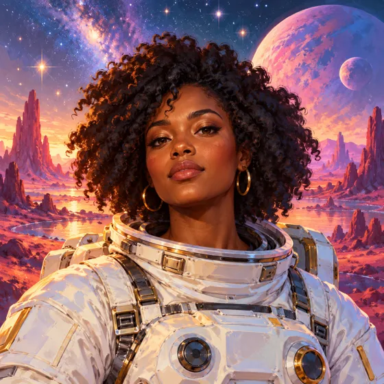
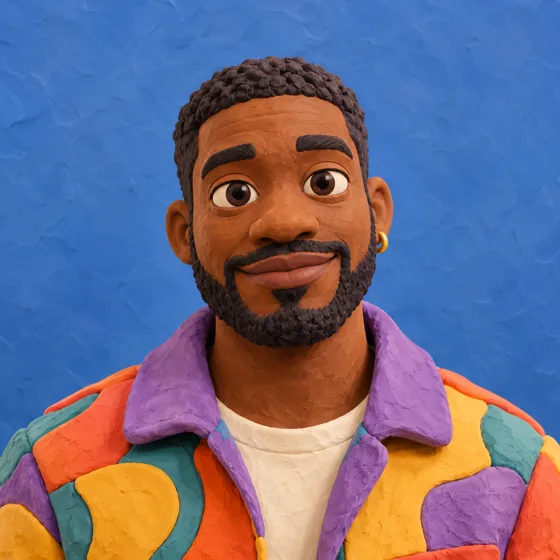

Tu criatura afín
Compara tu foto localmente con Pokémon, Digimon y guardianes zodiacales. Obtén una semejanza visual recreativa y decide si quieres transformarla.
TU IMAGINACIÓN. EN TU EQUIPO.
Transforma una fotografía en una nueva posibilidad. Retratos, fantasía y restauración con inteligencia artificial ejecutada localmente.
Presentación del proyecto · La generación funciona en la aplicación local.


DE LO COTIDIANO A LO IMPOSIBLE ✦ELIGE TU DIRECCIÓN CREATIVA
De la fotografía editorial a un personaje de otro mundo. Explora la colección.
Estas imágenes son ilustraciones conceptuales sintéticas. No son resultados del modelo local ni una garantía del resultado que obtendrás.
MÁS ALLÁ DEL RETRATO
Compara tu foto localmente con Pokémon, Digimon y guardianes zodiacales. Obtén una semejanza visual recreativa y decide si quieres transformarla.
Explora una recreación entre 8 y 17 años con edición guiada por referencia. Es una interpretación con IA; edad y parecido son aproximados.
Edita brillo, contraste y filtros, o amplía la resolución con Real-ESRGAN. Conserva tu original y descarga el resultado desde el estudio.
DISTINTAS HERRAMIENTAS, UN ESTUDIO
Instala los modelos por separado y elige según tu GPU y tu intención creativa.
| Motor | Para explorar | Referencia de recursos |
|---|---|---|
| Realistic Vision / DreamShaperSD 1.5 + IP-Adapter | Retratos e ilustración con referencia facial | Perfil ligero · CUDA |
| RealVisXL 5.0SDXL + IP-Adapter | Fotografía editorial | Descarga a disco según configuración |
| FLUX.2 klein 4BCreación y edición | Transformaciones guiadas por instrucciones | 13 GB VRAM estándar; perfil reducido experimental |
| Qwen Image Edit 2511Edición de imagen | Apariencia, vestuario y escenario | 24 GB VRAM / 64 GB RAM de referencia |
| Real-ESRGANSuperresolución | Restauración y ampliación ×2 / ×4 | Procesamiento por bloques |
Los requisitos exactos y las revisiones están en el registro de modelos del repositorio. La calidad y el parecido varían.
HAZLO TUYO
Clona el proyecto, prepara el entorno y descarga los pesos desde sus fuentes. El README te acompaña paso a paso.
Abrir guía de instalación ↗git clone https://github.com/\
helynecheverry/lumina-ia.git
cd lumina-ia
# Prepara el entorno y los modelos
# siguiendo el README.
bash scripts/start.shPython · FastAPI · PyTorch · Diffusers · MongoDB